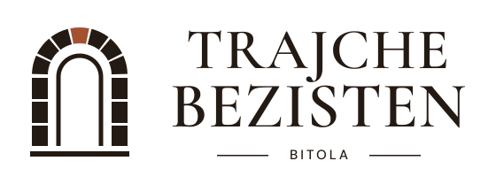
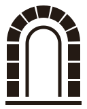

TRAJCHE BEZISTEN · BITOLA
The stone doorway.
An original seven-stone arch, an open doorway and a copper keystone. Heritage serif lettering is outlined into paths. The wordmark is self-contained: no external fonts, raster images or scripts.
Primary · warm paper

Download primary SVG
Light · dark background
Download light SVG
Monochrome · economical print
Download monochrome SVG
Mark · stone geometry

Download mark SVG
Small-size check
Restrained palette
Stone brown · #241A14
Warm cream · #F2E7D5
Copper · #A45132
Clear space: at least the cap height of the “T” in TRAJCHE around the full lockup. Never stretch the artwork. At very small sizes, use the mark or the simplified favicon. The light version belongs on a dark field.